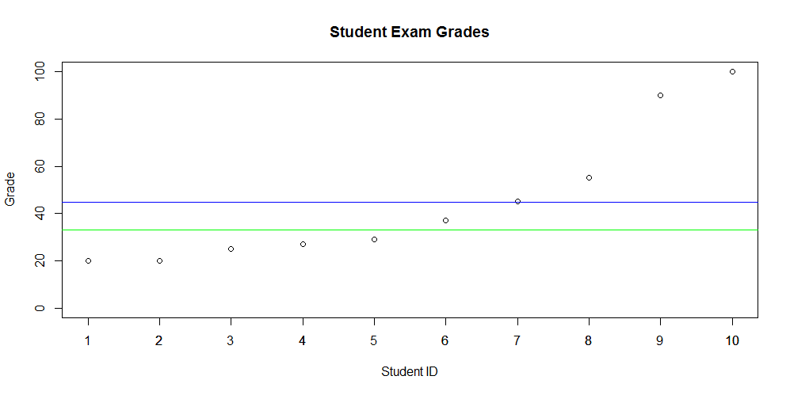

Quick Stats - Descriptive Statistics Part 2 - Median
Introduction
In this next post on descriptive statistics, the median will be discussed. In part 1 of this blog series we learned about the mean (average) and found out that it can easily be skewed by large or small values. Both the median and mean are "measures of central tendency". Central tendency is essentially the center position of a distribution for a data set. Now that you are refreshed, we can discuss the median.
Median
The median is simple to calculate. First, we must arrange the values from least to greatest. Next, we pick the center value - this is our median when there is an odd number of values. When there are an even number of values we simply add the two center values together and divide by 2.
Here are examples of both odd and even cases:
Odd number of values
1, 2, 3, 4, 5
Median = 3
Even number of values
1, 2, 3, 4
Median = (2 + 3) / 2 = 2.5
Median vs. Mean
As you can see the median is not influenced by outliers. It provides the central value that most of us tend to think of as the average (mean). You might ask when you would use one over the other. This question is difficult to answer without context. In some situations it may make more sense to use one or both. Let's look at some grades for 10 random students to see how the mean and median look.
The raw values are as follows:
20, 20, 25, 27, 29, 37, 45, 55, 90, 100

In the plot, shown above, the blue line represents the mean - 44.8%. The green line represents the median - 33%. Clearly there is a difference between these two measures of central point.
R
To calculate the median in R - simply use the built in function.
grades <- c(20, 20, 25, 27, 29, 37, 45, 55, 90, 100)
median_grade <- median(grades)
Python
To calculate the median in Python we use Numpy. Import Numpy and use the median function.
import numpy as np
grades = [20, 20, 25, 27, 29, 37, 45, 55, 90, 100]
median_grade = np.median(grades)
Conclusion
In this post we discussed the median and how it differentiates from the mean. We also established that context is important when deciding to use one versus the other. The mean and median are important values used in statistics and our every day lives.
The next article will discuss the mode - another useful descriptive statistic.